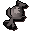

Death rune
| Config name | deathrune |
| Item id | 560 |
| Value | 30 gp |
| Weight | 2g |
| Members | No |
| Tradeable | Yes |
| Stackable | Yes |
| Defined in | scripts/skill_magic/configs/runes.obj |
Death rune
Used for medium level missile spells.
Show 1 ground spawn on the world map → Open in knowledge graph →
Dropped by
| NPC | Level | Quantity | Rarity | Via | Notes |
|---|---|---|---|---|---|
| 65 | 45 | 3/64 (4.69%) | |||
| 276 | 7 | 5/128 (3.91%) | |||
| 51 | 2 | 1/32 (3.12%) | |||
| 64 | 2 | 1/32 (3.12%) | |||
| 48 | 2 | 1/32 (3.12%) | |||
| 14 | 3 | 1/32 (3.12%) | |||
| 29 | 3 | 1/32 (3.12%) | |||
| 49 | 3 | 1/32 (3.12%) | |||
| 79 | 3 | 1/32 (3.12%) | |||
| 120 | 3 | 1/32 (3.12%) | |||
| 159 | 3 | 1/32 (3.12%) | |||
| 152 | 5 | 3/128 (2.34%) | |||
| 82 | 3 | 3/128 (2.34%) | |||
| 92 | 5 | 3/128 (2.34%) | |||
| 57 | 2 | 3/128 (2.34%) | |||
| 57 | 2 | 3/128 (2.34%) | |||
| 85 | 3 | 3/128 (2.34%) | |||
| 333 | 30 | 3/128 (2.34%) | |||
| 33 | 2 | 1/64 (1.56%) | |||
| 33 | 2 | 1/64 (1.56%) | |||
| 22 | 2 | 1/64 (1.56%) | |||
| 49 | 3 | 1/128 (0.78%) | |||
| 42 | 3 | 1/128 (0.78%) | |||
| 28 | 2 | 1/128 (0.78%) | |||
| 48 | 3 | 1/128 (0.78%) | |||
| 10 | 2 | 1/128 (0.78%) | |||
| 276 | 45 | 1/1024 (0.1%) | Ultra-rare drop table table | ||
| 227 | 45 | 1/4096 (0.02%) | Ultra-rare drop table table | ||
| 172 | 45 | 1/8192 (0.01%) | Ultra-rare drop table table | ||
| 86 | 45 | 1/8192 (0.01%) | Ultra-rare drop table table | ||
| 141 | 45 | 1/8192 (0.01%) | Ultra-rare drop table table | ||
| 141 | 45 | 1/8192 (0.01%) | Ultra-rare drop table table |
In drop tables
Sold at
| Shop | Shopkeeper | Stock |
|---|---|---|
| Lundail's Arena-side Rune Shop. | 250 | |
| Betty's Magic Emporium. | 1000 | |
| Aubury's Rune Shop. | 1000 | |
| Magic Guild Store | 1000 |
Ground spawns
| Area | Coordinates | Level | Count | Map |
|---|---|---|---|---|
| Gu'Tanoth | 2500, 2967 | 0 | 1 | view |
Quests
Elemental Workshop Holy Grail Watch Tower Underground Pass
Runecrafting
Death altar: level 65, 100 xp per essence members. Crafts  Death rune using
Death rune using

Death talisman.Altar at 3221, 3218 (view altar); mysterious ruins at 3221, 3218 (view ruins)
Referenced in scripts
scripts/_test/scripts/cheats/cheat_bank.rs2scripts/_test/scripts/cheats/cheat_magic.rs2scripts/areas/area_ardougne_west/scripts/civilian.rs2scripts/areas/area_taverly/scripts/crystal_chest.rs2scripts/areas/area_wilderness/scripts/king_black_dragon.rs2scripts/areas/area_wilderness/scripts/lava_maze.rs2scripts/drop tables/scripts/bandit.rs2scripts/drop tables/scripts/black_knight.rs2scripts/drop tables/scripts/chaos_dwarf.rs2scripts/drop tables/scripts/earth_warrior.rs2scripts/drop tables/scripts/giant.rs2scripts/drop tables/scripts/greater_demon.rs2scripts/drop tables/scripts/ice_giant.rs2scripts/drop tables/scripts/ice_warrior.rs2scripts/drop tables/scripts/kalphite_queen.rs2scripts/drop tables/scripts/kalphite_soldier.rs2scripts/drop tables/scripts/lesser_demon.rs2scripts/drop tables/scripts/moss_giant.rs2scripts/drop tables/scripts/otherworldly_being.rs2scripts/drop tables/scripts/red_dragon.rs2scripts/drop tables/scripts/shadow_warrior.rs2scripts/drop tables/scripts/shared_droptables.rs2scripts/drop tables/scripts/thug.rs2scripts/levelup/scripts/levelup_unlocks_runecrafting.rs2scripts/macro events/scripts/general/macro_event_maze.rs2scripts/macro events/scripts/thieving/macro_event_watchman.rs2scripts/minigames/game_trail/scripts/hard/zamorak_wizard.rs2scripts/minigames/game_trail/scripts/medium/trail_clue_medium_reward.rs2scripts/quests/quest_elemental_workshop/scripts/elemental_air.rs2scripts/quests/quest_elemental_workshop/scripts/elemental_earth.rs2scripts/quests/quest_elemental_workshop/scripts/elemental_fire.rs2scripts/quests/quest_elemental_workshop/scripts/elemental_water.rs2scripts/quests/quest_grail/scripts/black_knight_titan.rs2scripts/quests/quest_itwatchtower/scripts/city_guard.rs2scripts/quests/quest_upass/scripts/quest_upass.rs2